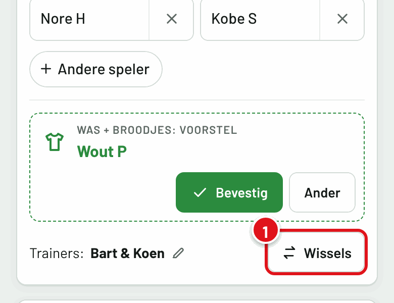
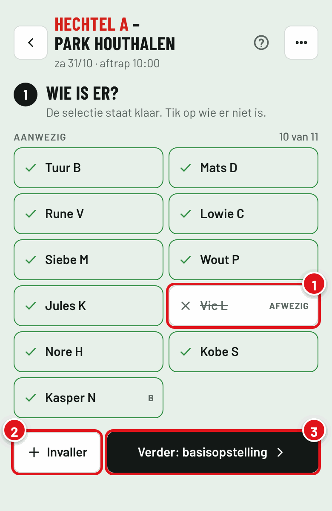
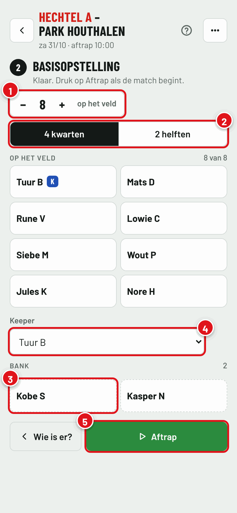
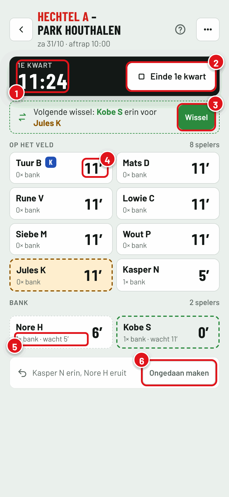
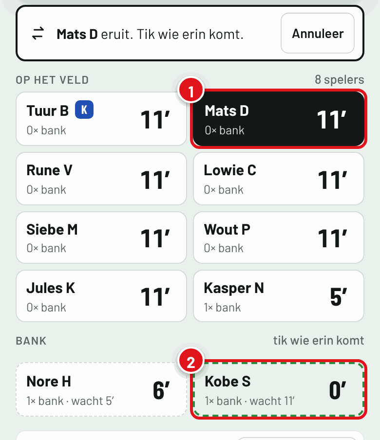
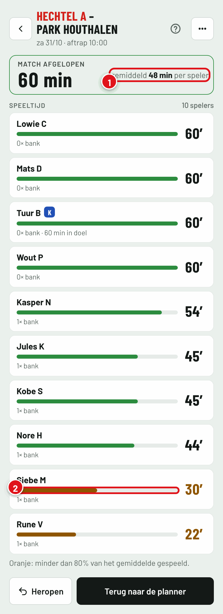
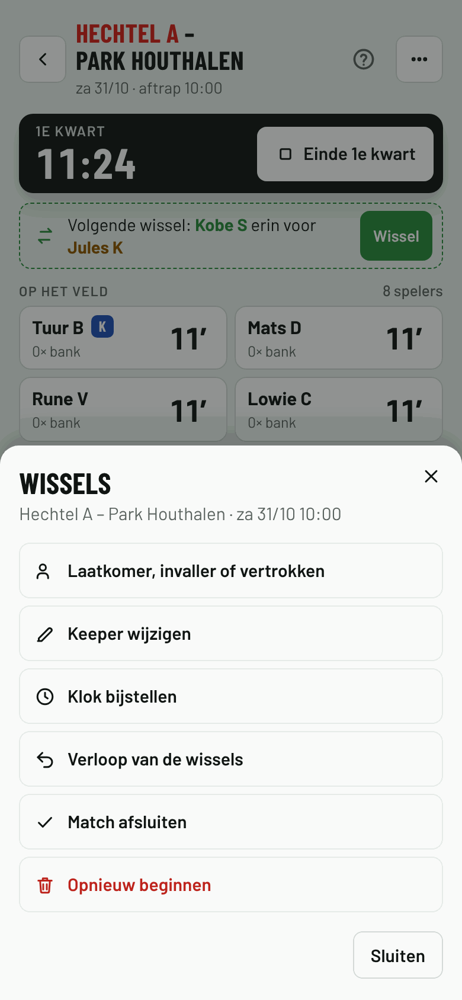
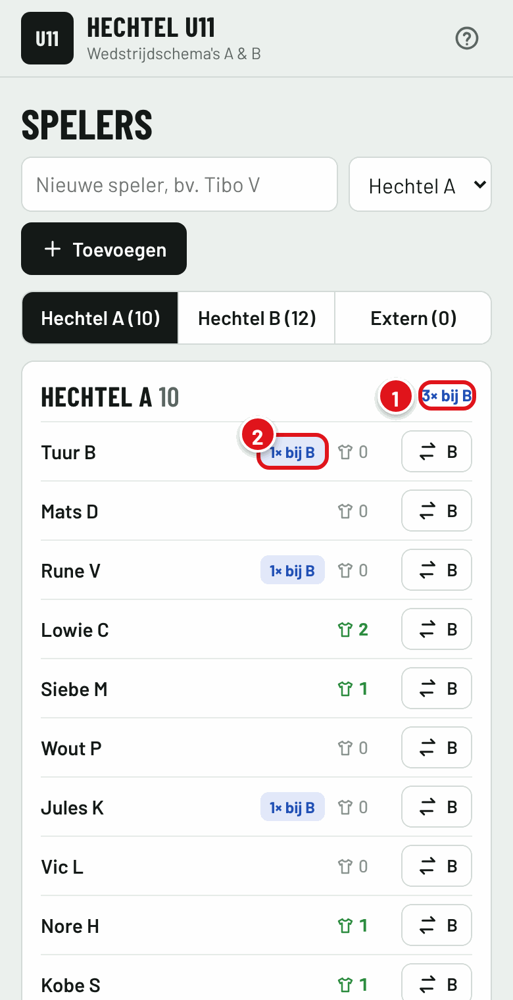

Wissels tijdens de match
Hou langs de lijn bij wie er speelt. De planner telt per speler de speelminuten en hoe vaak hij op de bank zat, en stelt telkens de eerlijkste volgende wissel voor. Zo krijgt iedereen evenveel speelkansen.
- Wie is er?De selectie staat klaar. Tik af wie er niet is.
- BasisopstellingKies wie start en wie in doel staat.
- AftrapDe klok loopt. Na elk kwart druk je op Einde en daarna op Start.
- WisselenNeem het voorstel over of tik zelf wie eruit gaat en wie erin komt.
Starten
Op elke matchkaart staat de knop Wissels. Tijdens de match staat daar Live met het kwart, na de match Speeltijd.
Open de wisseltool al voor de aftrap, als je nog goed bereik hebt. Op de gsm vult het scherm dan de hele breedte; met het pijltje linksboven ga je terug naar de planner.
Zet de planner op het beginscherm van je gsm (zie de handleiding). Dan heb je hem langs de lijn met één tik open.

Wie is er?
De selectie van de match staat al klaar. Je past alleen aan wat anders is dan gepland.
- 1Tik op wie er niet is, bijvoorbeeld omdat hij ziek is. Nog eens tikken zet hem terug.
- 2Invaller: iemand van de andere ploeg of een gastspeler. Het getal naast een naam is hoe vaak die speler dit seizoen al meespeelde met de andere ploeg.
- 3Ga verder naar de basisopstelling.
Dit verandert het schema niet. Wat je hier aanduidt, geldt alleen voor de wissels en de speeltijd.

Basisopstelling
- 1Hoeveel spelers op het veld staan, keeper inbegrepen. Standaard 8; de planner onthoudt wat je de vorige keer koos.
- 2Vier kwarten of twee helften.
- 3Tik op een speler om hem van de bank naar het veld te zetten, of terug.
- 4Kies wie in doel staat. De keeper krijgt een blauwe K.
- 5Aftrap zodra de scheidsrechter fluit: de klok begint te lopen.
Vanaf de tweede match met de wisseltool staat er ook een knop Voorstel: wie de vorige keer op de bank begon, start dan. Op hun tegel staat "vorige keer bank". Pas daarna gerust aan.

Tijdens de match
- 1De klok van het kwart. Tik erop om hem bij te zetten als hij niet gelijk loopt met die van de scheidsrechter.
- 2Einde kwart stopt de klok. In de pauze kan je ook wisselen. Daarna druk je op Start 2e kwart.
- 3Het voorstel: wie het minst speelde, komt erin voor wie het meest speelde. Eén tik op Wissel volstaat. De keeper krijgt nooit een voorstel.
- 4De speelminuten van elke speler.
- 5Hoe vaak die speler al op de bank zat en hoe lang hij nu wacht.
- 6Verkeerd getikt? Ongedaan maken zet de laatste wissel terug.

Zelf wisselen
Wil je iemand anders wisselen dan het voorstel?
- 1Tik op de speler die eruit gaat. Hij wordt zwart.
- 2Tik op de speler die erin komt. Groen omrand is wie het langst wacht en het minst speelde.
Het kan ook omgekeerd: eerst de speler van de bank, dan die op het veld. Gaat de keeper eruit, dan staat de invaller in doel. Wil je dat anders, kies dan Keeper wijzigen bij de drie puntjes.

Na de match
Druk in het laatste kwart op Einde match. Je krijgt de speeltijd van elke speler, van veel naar weinig.
- 1Hoe lang de match duurde en hoeveel elke speler gemiddeld speelde.
- 2Oranje: minder dan 80% van het gemiddelde gespeeld. Daar kan je de volgende match rekening mee houden.
Per ongeluk afgesloten? Tik op Heropen. De speeltijd blijft bewaard en is later terug te vinden via de knop Speeltijd op de matchkaart.

Goed om te weten
- Iemand komt te laat, of moet weg?
- Tik op de drie puntjes en kies Laatkomer, invaller of vertrokken. Een laatkomer komt op de bank. Wie vertrekt of geblesseerd raakt, tik je weg van de bank; zijn speeltijd blijft staan. Staat hij op het veld, wissel hem dan eerst.
- Volgen twee trainers dezelfde match?
- Dat kan. Wat de ene wisselt, ziet de andere meteen. Spreek wel af wie de wissels intikt.
- Slecht bereik langs het veld?
- De wissels worden op je gsm bewaard en doorgestuurd zodra er weer bereik is. Open de wisseltool daarom al voor de match.
- Valt mijn scherm uit?
- Zolang de klok loopt, blijft het scherm aan op de meeste gsm's. Valt het toch uit, dan loopt de klok gewoon verder.
- Waar vind ik de andere opties?
- Bij de drie puntjes rechtsboven: keeper wijzigen, klok bijzetten, het verloop van alle wissels, de match afsluiten of opnieuw beginnen.

Meespelen bij de andere ploeg
Bij Spelers zie je hoe vaak elke speler dit seizoen meespeelde met de andere ploeg. De planner doet daar zelf geen voorstel mee; het is een teller voor de trainers.
- 1Het totaal per ploeg: zo vaak speelde een speler van A dit seizoen mee bij B.
- 2Per speler. Tik op de naam om te zien op welke dagen.
De teller kijkt naar de selectie op het schema. Gebruikte je de wisseltool, dan telt wie er echt was.
